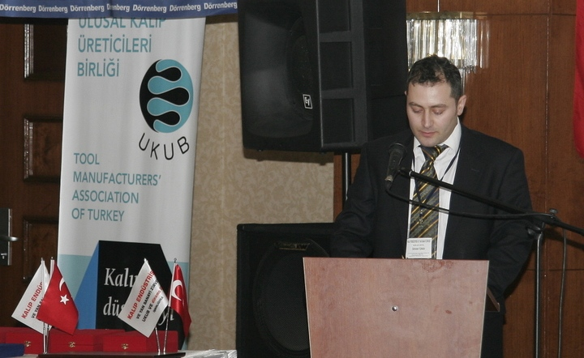
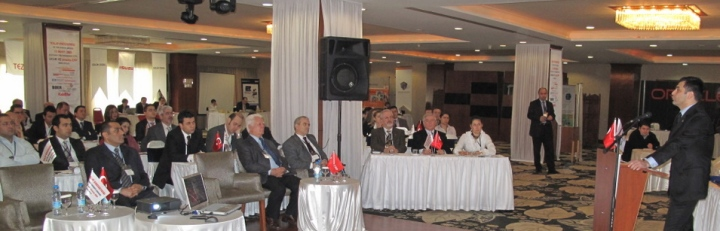
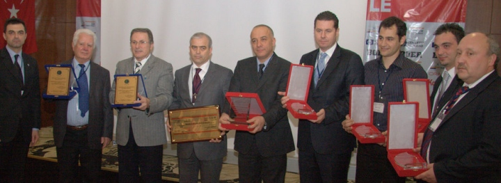
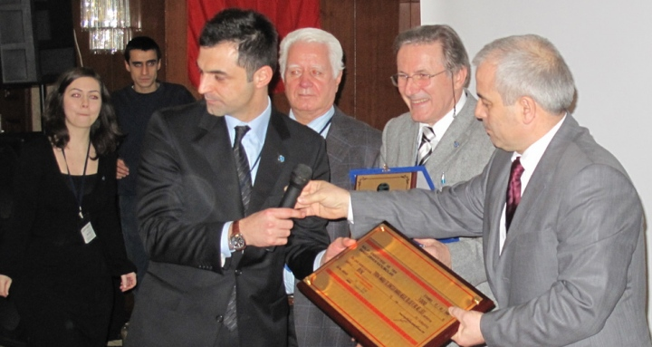
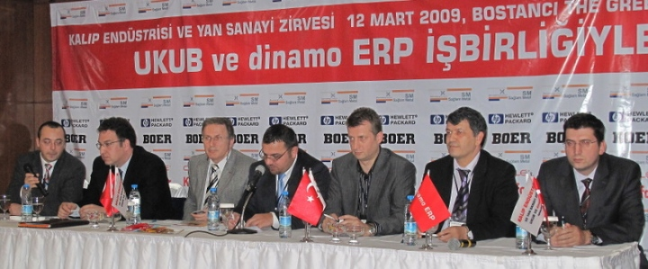
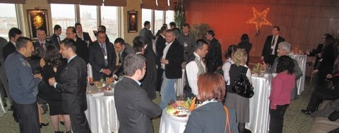
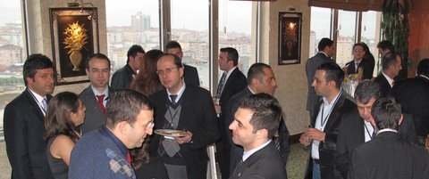

|

UKUB Yönetim Kurulu Baþkaný Þamil Özoðul konuþmasýnda, birlik hedeflerinden, sanayi envanteri çalýþmasýndan, teþvik alanýnda planlanan çalýþmalara kadar pek çok konuda UKUB üyelerine bilgiler verdi. Ýstihdam alanýndaki sorunlarýn da altýný çizen olan Özoðul, Ana Sanayi panelinde üyelerin sorularýný da yanýtladý.

Özoðul, konuþmasýnda þunlarý söyledi;
"Ana Sanayi ve Yan Sanayimizin Deðerli Temsilcileri, Turkiye Kalýp Endüstrisine Hizmet Veren Vefakar Tedarikçilerimiz, Herþeye raðmen halen kalýp üretme gayreti içinde olan cefakar kalýpçýlarýmýz, Sayýn Misafirlerimiz, Sevgili UKUB üyeleri, Deðerli Basýn Mensuplarý, Hepiniz Hoþ geldiniz.
Bugün burada toplanmamýzýn ana sebebi bilimsel bilgi paylaþýmýdýr.
Kalýpçýlýk ile ilgili imalat ve yönetim faaliyetlerimizi iyileþtirmek ve geliþtirmek için yapmamýz gerekenler üzerine konuþacaðýz ve bilgilerimizi paylaþacaðýz.
....
CRM ve teklif vermeden, Üretim ve muhasebeye kadar tamamýyla entegre bir ERP sisteminin hayata geçirilmesi kararlarýn verilmesi için gerekli olan verilerin güvenilirliðini arttýracaktýr. Yazýlýmdaki her bir modül diðerleri ile baðlantýlýdýr ve aralarýnda serbest bilgi akýþý vardýr. Çalýþan herkes ihtiyacý olan bilgiye ulaþabilme sansýna sahiptir.
Küçük ve büyük ölçekli üreticiler hali hazýrda ERP teknolojisine yatýrým yapmaktadýr. Üreticiler, ERP sistemine, yeni pazarlara girmek ve yeni imkanlarý daha iyi deðerlendirebilmek için yatýrým yapmaktadýr.
Otomasyon teknolojisinin Uretim seklini olumlu yönde deðiþtirdiðinin kanýtý bugünkü ekonomik durumdur.
Ýniþ-çýkýþlarla dolu ekonomik bir durumda bile, üreticilerin otomasyona yatýrým yapmaya devam ettikleri görülmektedir.
ERP teknolojisini kullanan üreticiler dikkat çekici oranda yatýrýmlarýnýn karþýlýðýný almýþlardýr.
Bu konuda o kadar basarili olmuþlardýr ki, ellerinde olan ERP sisteminin iþlevlerinin daha fazlasýyla önde gelen teknolojileri kullanmaya baþlamýþlardýr."
Zirve sponsorlarý Saðlam Metal, Oracle Türkiye, HP ve Teknolojik Yazýlýmlar, Boer Elek., KobiEfor ve sektöre deðerli katkýlarýndan dolayý Ermetal Þirketler Grubu Yönetim Kurulu Bþk. Fahrettin GÜLENER ve Yýldýz Kalýp Yön. Krl. Bþk. Cemil YILDIZ plaketlerini, Tekirdað End. Meslek Lisesi Okul Md. Abdurrahman Mayadað da zirve katýlýmcýlarý adýna yapýlan baðýþ çekini Ulusal Kalýp Üreticileri Birliði 4. Dönem Yönetim Kurulu Bþk. Þamil Özoðul tarafýndan aldýlar.


rk Pres Genel Md. Ali Çakýr'ýn moderatörü olduðu Ana Sanayi panelinde Otosan Takým Kalýp Md. Burak GÜRLER, BSH Kalýphane Md. Hanifi ÝÇTÜZER, Ermetal Yönetim Kurulu Baþkaný Fahrettin GÜLENER, Aka Otomotiv Genel Md. Yrd. Koray ÖZYANIK, Þahince Fabrika Md. Özgür ÞAHÝN, atýlan olumlu adýmlarý, takip edebilecek uygulamalar konusunda beklentilerini anlattýlar.

Ark Pres Genel Md. Ali Çakýr'ýn moderatörü olduðu Ana Sanayi panelinde Otosan Takým Kalýp Md. Burak GÜRLER, BSH Kalýphane Md. Hanifi ÝÇTÜZER, Ermetal Yönetim Kurulu Baþkaný Fahrettin GÜLENER, Aka Otomotiv Genel Md. Yrd. Koray ÖZYANIK, Þahince Fabrika Md. Özgür ÞAHÝN, atýlan olumlu adýmlarý, takip edebilecek uygulamalar konusunda beklentilerini anlattýlar.
Green Park Bostancý 11. Katta yapýlan kapanýþ kokteyl ile Zirve 18:00 de tamamlandý.


Zirveyle ilgili düþüncelerini paylaþan bazý katýlýmcýlar:
Özgür Þahin,
Þahince Otomotiv San. Tic. A.Þ.
"Hýzla geliþen dünyamýzda ülkemizi, ulu önderimiz Atatürk'ün de hedef gösterdiði seviyelere ulaþtýrabilmek için bizlere çok önemli bir görev düþmekte. Her zaman ileri gitmek, yorulmadan ve yorulsak bile. Geç baþladýðýmýz yarýþta herkesten daha hýzlý bir þekilde ileri gitmek.
Kurallarý zaten çok acýmasýz olan bu yarýþta zaman zaman hýzýmýzý kaybetmemiz, kendimize hatta sektörümüze zarar verecek hatalar yapmamýz mümkün olmaktadýr. Bu tip durumlarýn oluþumunu engelleyebilmek içinse hem UKUB gibi oluþumlara hem de "Kalýp Endüstrisi ve Yan Sanayi Zirvesi" gibi organizasyonlara ziyadesiyle ihtiyacýmýz olduðu kanýsýndayým.
12 Mart 2009 tarihinde gerçekleþtirdiðimiz zirve ilerleme hýzýmýzý ve verimliliðimizi arttýracak yeniliklerin sektöre tanýtýlmasý, ana sanayilerin kalýpçýlardan beklentilerinin ve iyileþtirilmesi gerekli olan noktalarýn tekrar deðerlendirilmesi açýsýndan oldukça baþarýlý bir þekilde sonuçlanmýþtýr.Ayrýca dünya genelinde etkili olan krizin sektörümüz üzerindeki yansýmalarý, doðuracaðý fýrsat ve risklerin tartýþýlmýþ olmasý hepimiz açýsýndan faydalý olmuþtur kanýsýndayým.
Bundan sonra da sektörümüzün kalite seviyesini ve rekabetçiliðini arttýrmaya yönelik paylaþýmlarýn saðlanacaðý ortamlarýn sayýsýný arttýrmalý ve bu ortamlarda elde ettiðimiz kazanýmlarla beraber hem makine parký hem de insan kaynaklarý açýsýndan geliþebilmek için hedeflerimizi belirlemeliyiz."
Hakan ERKOVAN, BSH
"Birinci kýsým gayet bilgi vericiydi. Özellikle ikinci kýsým çok renkliydi, Fahrettin GÜLENER'in konuþmasýndaki mesajý alabilenler sektörle ilgili var olan tecrübelerden faydalanmak gerektiðini bir kez daha anlamýþ olmalýlar. Kalýpçýlýðý yurtdýþýna taþýmak adýna fikre ve yeterli güce sahibiz. Panelde, kalýpçýlarýn sorunlarýný dinledik ve çözüm için birlikte çalýþmalýyýz."
Fahrettin Gülener, Ermetal Þirketler Grubu Yönetim Kurulu Bþk.
"Türkiye'nin önemli katýlýmcýlarýnýn bir araya geldiði bu organizasyonda rafine bir meslek adamý topluluðunun burada olmasýndan mutluluk duydum. Dünya, kalýpçýlýðýn deðerini biliyor, geliþmekte olan bir ülke olarak bizim de kalýpçýlýðýn deðerinin yeterince farkýna varýyor olmamýz çok sevindirici. Bugün, UKUB akademik anlamda eðitim vermek konusunda 100 üzerinden 90 almýþtýr!"
Sefa Öztürk,
Arsan Kauçuk
"Böyle bir organizasyona ilk defa katýlýyoruz. Türkiye'deki kalýpçýk sektörünün potansiyeli hakkýnda bilgilendik. Ürünlerimizin kalýplarýný kendimiz ürettiðimiz için kalýpçýlarýn sorunlarýný biz de yaþýyoruz, bugün yalnýz olmadýðýmýz fark ettik. Ýþbirliði arayýþý ile de geldiðimiz bu organizasyondan çok umutlu ayrýlýyoruz."
Özhan Türer,
Saglam Metal A.Þ.
"Global krizde, kalýpçýlýkla ilgili bu zirve nokta atýþý oldu. Krizde ayakta kalmanýn tek yolu Ar-Ge, innovasyon ve planlamadýr... Bunlar için de son teknolojileri kullanmak mecburidir. Farklý branþlardan kurumsal, büyük ve köklü firmalarýn ERP programlarýna yeni yeni geçtiði günümüzde, kalýphanelerin ERP programlarý kullanmaya baþladýðýný ve ilgisini görmek, Türk Kalýpçýlýgýnýn geleceðinin çok parlak olduðunu teyit etti..."
Fatma Sarp,
Çelik Dizel Otomotiv San. Tic.
"12 Mart 2009 tarihinde gerçekleþen Kalýp End. ve Yan Sanayi Zirvesi bizim açýmýzdan güzel sonuçlanmýþtýr. Çelik Dizel ISUZU bayisi olarak bu zirveden çok etkilendik. Katýlýmcýlarýn görüþ ve düþünceleri sektör hakkýnda bizleri bilgilendirdi. Bu sebepten dolayý bu zirveyi hazýrlayanlara çok teþekkür ederiz. Seneye tekrarý olursa katýlabiliriz."
Ali Oktay Ortakaya,
HP Turkey
"Zirve, Kalýp sektöründeki bir çok kiþiyi bir araya getirerek, ortak sorunlarýn ve is geliþtirmelerinin tartýþýldýðý bir ortam yarattý. O yüzden emeði gecen herkese sonsuz teþekkürler. Özellikle bu sektörde çok tecrübeli katýlýmcýlarýn verdiði bilgiler vizyon anlamýnda deðer katici idi. Kalýp sektörünün gidebileceði yeri öngörme, daha verimli ve kaliteli is yapabilme adýna ne varsa katýlýmcýlarýn bulabildiði bir organizasyon oldu.
Teknolojik acýdan HP'nin Ýþistasyonlarý Performansýný ve Teknolojik Yazýlýmlar'ýn CAD/CAM uygulamalarý hakkýndaki güncellemeleri önemli idi. Umarým bu zirve, bir çok noktada iþbirliðini artýrýcý sonuçlar doðuracaktýr."
Kaynaklar:
|